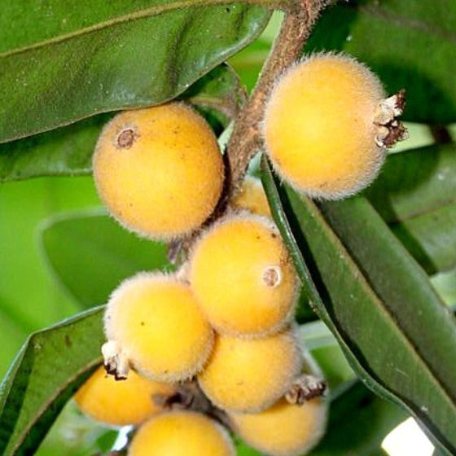
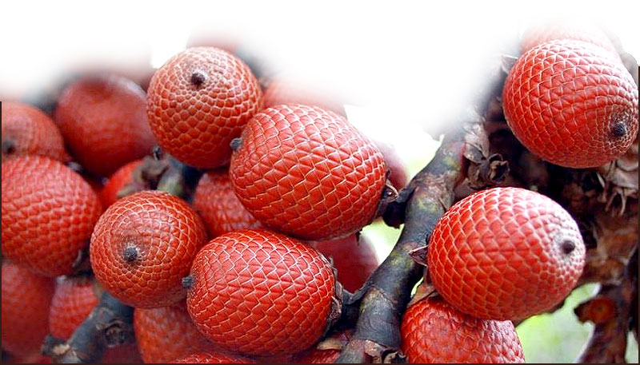
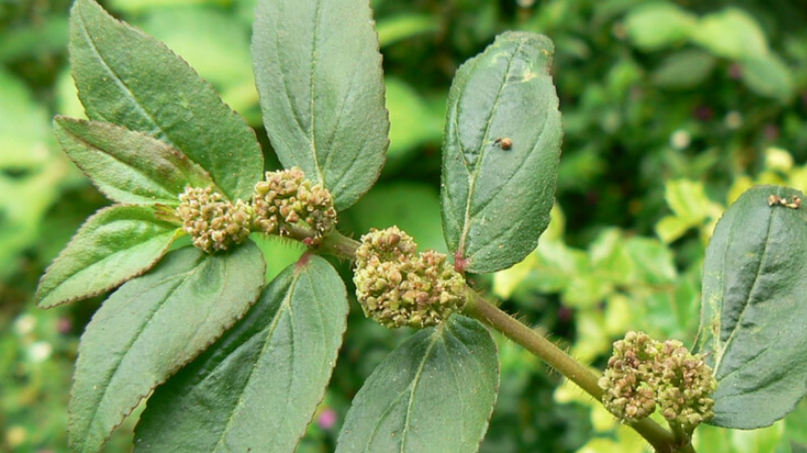
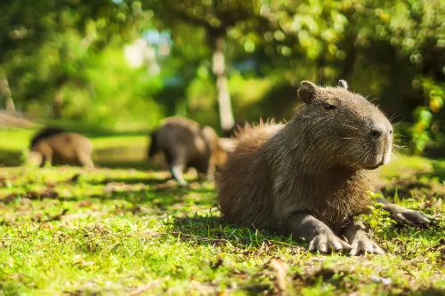
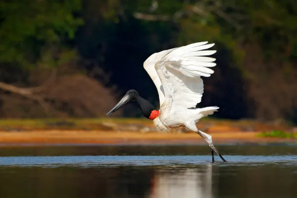

O que é o pantanal
O Pantanal é um dos menores biomas existentes no Brasil. Sua localização está na região Centro-Oeste, nos estados do Mato Grosso (no sul do estado) e do Mato Grosso do Sul (no noroeste do estado), além de poder ser encontrado no Paraguai e na Bolívia. É um bioma extremamente rico quando o assunto é fauna brasileira, pois abriga grande parte dos animais existentes no Brasil. Sua preservação ambiental é alta, sendo considerado o bioma mais preservado do país de acordo com os órgãos governamentais, como o Instituto Brasileiro de Geografia e Estatística. Esse bioma pode ser encontrado em 22 cidades brasileiras, nos estados do Mato Grosso e Mato Grosso do Sul. Sua área de ocorrência limita-se ao oeste desses estados, nas fronteiras com o Paraguai e a Bolívia. Com isso, o Pantanal também pode ser encontrado nesses dois países.

Flora
A flora do Pantanal é adaptada às condições de alagamento e variação sazonal de água. Alguns das principais plantas incluem:
Cabeludinha
A cabeludinha possui arbusto perene de 2 a 4 m de altura com copa frondosa e compacta . Suas folhas são verdes, coriáceas, alongadas com 6 a 11 cm de comprimento, formadas d ois a dois e opostas nos ramos, a nervura principal é saliente na face inferior e as margens do limbo recurvadas para baixo. O pecíolo é curto e as flores são brancas, pequenas, hermafrod itas, autoférteis, formadas em grande quantidade, em gluméluras e axilares. Os frutos maduros s ão globosos, casca grossa, cor amarela-canário, a polpa é translúcida, suculenta, doce e levemen te ácida (adstringente). Em cada fruto contem 1 a 2 sementes grandes.
Buriti
O sorgo é uma planta selvagem adaptada às condições áridas e semiáridas, originária do deserto de Saara, na África. Com o tempo, as comunidades humanas começaram a domesticar a cultura, selecionando variedades com características desejáveis, como maior produtividade, resistência a doenças e adaptação a diferentes ambientes. Com a expansão das rotas comerciais e as migrações humanas, o sorgo foi levado para outras partes do mundo. Os árabes foram responsáveis por sua introdução no Oriente Médio, enquanto os portugueses e espanhóis o levaram para a Europa. Durante os séculos 16 e 17, o sorgo chegou às Américas, trazido pelos colonizadores europeus. No Brasil, o sorgo foi introduzido no início do século 20, inicialmente para produção de forragem para alimentação animal. A cultura do sorgo ganhou destaque nas Regiões Nordeste e Centro-Oeste, onde suas características de resistência à seca e adaptação a solos pobres foram valorizadas.
Vitoria-Régia
É uma planta exclusivamente aquática. Possui folhas flutuantes e circulares que podem atingir 2,5 metros de diâmetro quando adultas. Estas possuem canais de escoamento e duas fendas laterais, encaminhando a água das chuvas para o lago. Além de suas nervuras, possui bordas de aproximadamente 10 cm em suas extremidades e, também, compartimentos de ar em sua região inferior. Estas duas estruturas permitem com que, mesmo em contato com a água, a folha não afunde e tampouco ocorra refluxo desta. Ela se liga, por meio de um pecíolo longo e flexível, ao rizoma. Este reservatório energético da planta é rico em amido, ferro e sais minerais, e pode ser utilizado como alimento. O pecíolo possui, ainda, diversos espinhos em sua extensão, conferindo maior resistência à herbivoria. Esta angiosperma possui flores que, em seus primeiros momentos, têm coloração branca, com bordas esverdeadas. Elas vivem por apenas 48 horas, sendo que no segundo dia estão aptas para polinização e adquirem coloração rósea. O fruto amadurece em torno de seis semanas e as sementes são flutuantes. Estas, em época de vazante, fixam-se no solo, germinando uma nova planta.
Erva-de-Santa-Luzia
Espécie nativa da América tropical, amplamente distribuída no mundo. No Brasil ocorre em quase todo o território, sendo hospedeira de nematoides, além de ser uma espécie daninha em expansão. A planta tolera solos relativamente pobres e com boa umidade. Planta anual, com ciclo que pode durar até um ano. Sua reprodução é por sementes, que se formam em quantidades que podem superar a 3.000 sementes por planta. Seu hábito de crescimento é herbáceo, prostrado ou semi-ereto, chegando, excepcionalmente a 50cm de altura. Forma um látex branco, que escorre de ferimentos. As folhas em pares, opostas, de limbo um pouco assimétrico na base. São verdes, mas geralmente com manchas violáceas.
Fauna
O Pantanal é uma das maiores áreas alagadas do mundo e possui uma rica biodiversidade. Aqui estão alguns dos principais grupos e espécies de fauna que podem ser encontrados lá:
Capivara
A capivara é um animal mamífero que chama a atenção pelo seu tamanho, sendo considerado o maior roedor do mundo. Trata-se de um animal herbívoro, semiaquático e que vive em grupos. Esses animais são encontrados vivendo próximo a corpos d´água, sendo esses ambientes usados para se protegerem e também para se reproduzirem. Capivaras podem ser predadas por diferentes animais, como onças, jaguatiricas e jacarés. As capivaras estão associadas com a transmissão da febre maculosa, sendo, portanto, importantes do ponto de vista da saúde pública.
Onça Pintada

A onça-pintada é o maior felino das Américas, o terceiro maior felino do mundo, atrás apenas do tigre e do leão . É conhecida por diversos nomes nas diferentes regiões onde ocorre: onça-preta, jaguar, jaguaretê, yaguareté, tigre, canguçu, pintada, pinima, pinima-malha-larga e pixuna. Considerada um predador do topo da cadeia, a onça-pintada reina absoluta nos ambientes onde vive, alimentando-se de pequenos tatus e cutias a jacarés e antas. Elas controlam populações de presas e são de extrema importância no equilíbrio dos ecossistemas onde estão inseridas. São carnívoras estritas, ou seja, alimentam-se exclusivamente de carne. Levando em consideração a proporção, têm a mordida mais poderosa entre os felinos, inclusive mais forte que a do tigre e a do leão. É um animal com hábitos predominantemente crepusculares e noturnos, sendo mais ativo ao anoitecer e ao amanhecer, embora não seja raro encontrá-lo se deslocando e caçando durante a luz do dia. Sua área de vida varia muito, de acordo com o ambiente, a disponibilidade de presas e a densidade populacional de onças.
Tuiuiu
O tuiuiú (Jabiru mycteria) é uma cegonha encontrada desde o sul do México até o norte da Argentina, mas 50% da população está no Brasil, principalmente na planície pantaneira. Com pernas longas, bico comprido, cabeça preta, corpo branco e uma faixa vermelha no pescoço, é uma ave que, definitivamente, marca presença. Por ser uma cegonha, voa com suas pernas e pescoço esticados, diferentemente das garças, que tem seus pescoços encolhidos durante o vôo. Chega a 1,60 metros de altura e impressionantes 3 metros de envergadura, além de pesar até 8 kg. É a maior ave da maior planície inundável do mundo com a capacidade de voar. Não é a toa que o tuiuiú é considerado o símbolo do Pantanal. E é oficial, segundo a Lei 5950/1992. Sua alimentação é basicamente composta por moluscos, peixes, répteis, insetos e até pequenos mamíferos. Podem também se alimentar de pescado morto, ajudando a evitar que peixes que morrem por falta de oxigênio nas épocas de seca entrem em estado de putrefação.
Fatos interessantes sobre o pantanal
Os 210 mil quilômetros quadrados do Pantanal equivalem à soma das áreas de quatro países europeus – Bélgica, Suíça, Portugal e Holanda. As cheias anuais dos rios da região atingem cerca de 80% do Pantanal e transformam a região em um impressionante lençol d'água, afastando parte da população rural que migra temporariamente para as cidades ou vilas. Sua paisagem é conhecida por ser um mosaico de ecossistemas, já que abrange um um pouco da Amazônia, uma parte do Cerrado, outra da Mata Atlântica e uma porção do Charco boliviano. A região concentra uma rica biodiversidade. Já foram registradas no Pantanal pelo menos 4.700 espécies, incluindo plantas e vertebrados. Desse total, entre as quais estão 3.500 espécies de plantas (árvores e vegetações aquáticas e terrestres), 325 peixes, 53 anfíbios, 98 répteis, 656 aves e 159 mamíferos. Devido a sua importância ambiental, o bioma foi decretado Patrimônio Nacional, pela Constituição de 1988, e Patrimônio da Humanidade e Reserva da Biosfera, pelas Nações Unidas, em 2000.
Resumo
Localizado no coração da América do Sul, o Pantanal é uma região peculiar não só pelas suas belezas naturais como também pelo papel que desempenha na conservação da biodiversidade. Também chamado de “reino das águas”, esse imenso reservatório de água doce é muito importante para o suprimento de água, a estabilização do clima e a conservação do solo. O Pantanal é a maior área úmida continental do planeta. Ele ocupa parte dos estados do Mato Grosso e Mato Grosso do Sul e estende-se pela Bolívia e Paraguai. Para enfrentar esses problemas o WWF desenvolve iniciativas de conservação compartilhadas com o Brasil, o Paraguai e a Bolívia e busca reduzir os prejuízos das atividades humana, promovendo a proteção dos ecossistemas aquáticos, o desenvolvimento de boas práticas produtivas, o planejamento sistemático do território e o desenvolvimento de hábitos responsáveis de consumo.